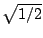

Example G08.reverb.pd (Figure 7.31) shows a simple artificial reverberator,
essentially a realization of the design shown in Figure 7.15. Four
delay lines are fed by the input and by their own recirculated output. The
delay outputs are intermixed using rotation matrices, built up from elementary
rotations of  as in Figure 7.13 (part a).
as in Figure 7.13 (part a).
The normalizing
multiplication (by  at each stage) is absorbed into the feedback
gain, which therefore cannot exceed  .
At a feedback gain of exactly
.
At a feedback gain of exactly  , all the energy leaving the delay lines is
reinserted into them, so the reverberation lasts perpetually.
, all the energy leaving the delay lines is
reinserted into them, so the reverberation lasts perpetually.
Figure 7.32 shows the interior of the reverb-echo abstraction used in the reverberator. The two inputs are mixed (using the same rotation matrix and again leaving the renormalization for later). One channel is then delayed. The delay times are selected to grow roughly exponentially; this ensures a smooth and spread-out pattern of echos.
Many extensions of this idea are possible of which we'll only name a few. It is natural, first, to put low-pass filters at the end of the delay lines, to mimic the typically faster decay of high frequencies than low ones. It is also common to use more than four recirculating delays; one reverberator in the Pd distribution uses sixteen. Finally, it is common to allow separate control of the amplitudes of the early echos (heard directly) and that of the recirculating signal; parameters such as these are thought to control sonic qualities described as ``presence", ``warmth", ``clarity", and so on.